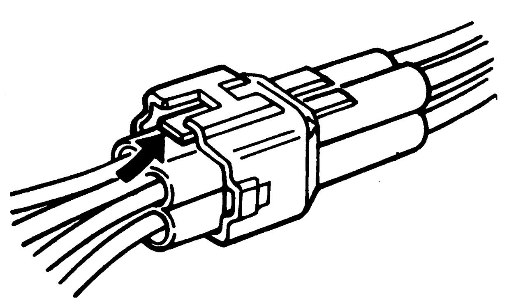
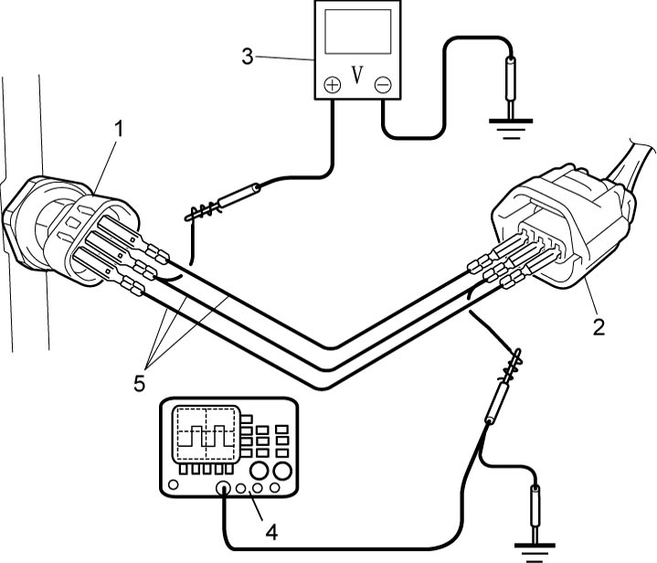

1
| Precautions for Engine (D16AA) |
Warning for Air Bag
Refer to Warning for Air Bag.
Precautions for Fuel System Service
Precautions for Electrical Circuit Service
Precautions for Catalytic Converter and DPF®
Reassembling Note for Wiring Harness
Observe Reassembling Note for Wiring Harness whenever installing wiring harness.
Otherwise, electrical trouble may occur.
Precautions for Engine Service
•If a jack is applied to the oil pan when raising or supporting the engine, the oil pan could be deformed or broken.
Always use a chain hoist to support the engine by attaching the chain to the hooks on the engine.
•If the 12 V electrical system is shorted while servicing the engine, the engine electrical circuits could be damaged seriously.
When the intended service operation does not require electric power supply from the battery, disconnect the negative (–) cable at the battery before starting the service work.
•If foreign material has entered the engine during removal of intake system components, internal parts of the engine could be severely damaged when the engine is started.
Suitably cover the air intake port when the air cleaner, throttle body, intake manifold or other intake system component is removed.
•When disconnecting connectors, do not pull wire harness but make sure to hold connector itself. With lock type connector, be sure to unlock before disconnection.
Attempt to disconnect connector without unlocking may result in damage to connector. When connecting lock type connector, insert it till clicking sound is heard and connect it securely.

Always use a chain hoist to support the engine by attaching the chain to the hooks on the engine.
•If the 12 V electrical system is shorted while servicing the engine, the engine electrical circuits could be damaged seriously.
When the intended service operation does not require electric power supply from the battery, disconnect the negative (–) cable at the battery before starting the service work.
•If foreign material has entered the engine during removal of intake system components, internal parts of the engine could be severely damaged when the engine is started.
Suitably cover the air intake port when the air cleaner, throttle body, intake manifold or other intake system component is removed.
•When disconnecting connectors, do not pull wire harness but make sure to hold connector itself. With lock type connector, be sure to unlock before disconnection.
Attempt to disconnect connector without unlocking may result in damage to connector. When connecting lock type connector, insert it till clicking sound is heard and connect it securely.

 "Expand image")
Precautions for Diagnosing Trouble
•Do not disconnect connectors from ECM, battery cable at battery, ECM ground wire harness from engine or fuse before checking diagnostic information (DTC) stored in ECM memory.
Such disconnection will clear memorized information in ECM memory.
•Diagnostic information stored in ECM memory can be cleared as well as checked using SUZUKI scan tool. Before using scan tool, read its Operator’s Manual to know how to use it.
•Read Precautions for Electrical Circuit Service before inspection and observe what is written there.
•It is possible to communicate ECM via DLC using not only SUZUKI scan tool but also CAN communication OBD-II generic scan tool.
Such disconnection will clear memorized information in ECM memory.
•Diagnostic information stored in ECM memory can be cleared as well as checked using SUZUKI scan tool. Before using scan tool, read its Operator’s Manual to know how to use it.
•Read Precautions for Electrical Circuit Service before inspection and observe what is written there.
•It is possible to communicate ECM via DLC using not only SUZUKI scan tool but also CAN communication OBD-II generic scan tool.
Precautions for Replacing ECM
•ECM must be replaced with new one.
•Register the following items of vehicle information to new ECM according to Registration for ECM Replacement:D16AA. Without registering all of these items, the engine cannot be started or, even if the engine is started, original engine performance will be affected.
If the “vehicle information” cannot be uploaded to the new ECM from the replaced ECM using SUZUKI scan tool, use the following method.
•Register the following items of vehicle information to new ECM according to Registration for ECM Replacement:D16AA. Without registering all of these items, the engine cannot be started or, even if the engine is started, original engine performance will be affected.
If the “vehicle information” cannot be uploaded to the new ECM from the replaced ECM using SUZUKI scan tool, use the following method.
—Manual input of “vehicle variant data”
—Injector calibration code
—Regeneration (DPF)
—Oil change request light reset
—EGR-1 data initialization
—EGR-2 data initialization
—DPF® driving pattern parameter initialization
—A/F sensor dew point initialization
—Turbocharger test
—Immobilizer ID code
—Injector calibration code
—Regeneration (DPF)
—Oil change request light reset
—EGR-1 data initialization
—EGR-2 data initialization
—DPF® driving pattern parameter initialization
—A/F sensor dew point initialization
—Turbocharger test
—Immobilizer ID code
Precautions for ECM Circuit Inspection
Do not measure circuit voltage and/or pulse signal of ECM by inserting tester probe into a sealed terminal of ECM.
When measuring circuit voltage and/or pulse signal of ECM, connect service wires (5) to terminals of each sensor / actuator (1) and sensor / actuator connector (2). Otherwise, sealed terminals, ECM and its circuits may be damaged.

 "Expand image")
| 3. | Voltmeter | 4. | Oscilloscope |